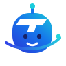

44 / 32 / 20PX
SIDEBAR 32PX
TasqraDOCUMENT · TO · ACTION
TASQRA BRAND PLAYGROUND · ROUND 4
이번에는 18px 아이콘 규칙부터 생각하지 않았습니다. 먼저 기억되는 인상과 성격을 만들고, 그다음 사이드바 축소 모습을 확인했습니다. 메인 마크와 캐릭터는 같은 색·T·오비트 언어를 공유하지만 역할은 다르게 설계했습니다.
헤더·사이드바·앱 아이콘에 직접 사용하는 후보
로고를 대체하기보다 빈 화면·로딩·도움말에서 브랜드 성격을 만드는 후보

제안: 하나만 고르기보다 브랜드 마크와 캐릭터를 한 쌍으로 가져갈 수 있습니다. 예를 들어 01을 헤더·사이드바 로고로 쓰고, 04를 빈 화면·AI 분석 중·온보딩에 쓰면 제품은 단정하게 유지하면서도 기억되는 성격을 만들 수 있습니다.